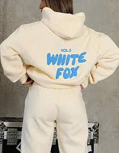
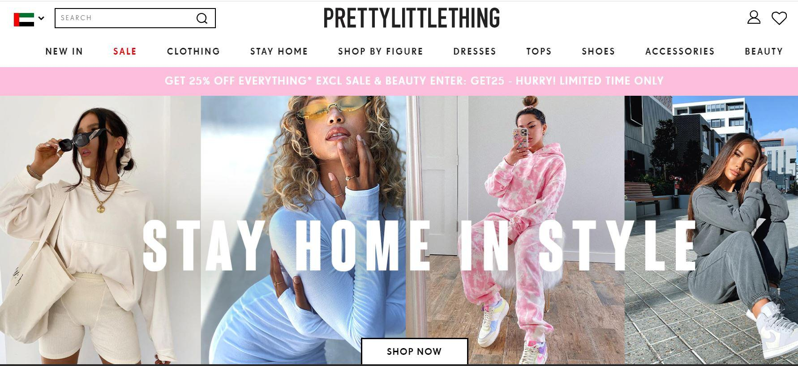
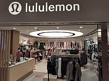

------------------------------------------------------------------------------------------------- -------------------------------------------------------------------------------------------------- -------------------------------------------------------------------------------------------------- --------------------------------------------------
WHITE FOX BOUTIQUE
White Fox Boutique is an Australian brand that has recently become very popular amongst teenagers and young adults.
They sell a range of items and have different lines of products, but their loungewear in particular has really
taken off. In their loungewear section, they sell shorts, tshirts, hoodies and tracksuit bottoms with different styles
of writing saying White Fox and all their different seasons. There areso many colours from bright reds to pale greys
there is something for everyone! I own two of their hoodies in a blue and a green and they are my go to when I need
to keep warm. I am looking forward to buying some more from their collection in the future since they are such good
quality and are incredibly stylish. The hoodies are perfect for winter days and their tshirts are perfect for summer months
at the pool. Each one of their hoodies has a matching tshirt, shorts and tracksuit bottoms in the same colour and style so
that you can purchase a matching set. They are an only online brand and the delivery will take an estimated 3-6 days
since your package will be coming all the way from Australia and they are a very trendy brand so the delivery may take
a little while longer if they have lots of orders. You can get free delivery if you spend over £100 but if you don't it
will cost approximately £4. it is definitelt worth it though!
------------------------------------------------------------------------------------------------- -------------------------------------------------------------------------------------------------- -------------------------------------------------------------------------------------------------- --------------------------------------------------
PRETTY LITTLE THING
Pretty Little Thing is also known as PLT and it is a fully online brand meaning that they do not have any physical in person
stores. They sell a wide range of clothes from activewear to loungewear that depends on the time of the year and you are guaranteed
to find something that you like. You can scroll on their website for hours and keep finding new items because they
have so many different clothes for different occasions for an affordable and reasonable price. if you are shopping from England, delivery is
a small fee of £3.99 for arrival within a week or you can pay extra for next day delivery so that you can get your new gorgeous clothes
as soon as possible. Once your order something once, ypou will find yourself hungry to order more and more of these super cute clothes
since they go with absolutely everything. People may start coming up to you on the streets and asking where you got your adorable top
from or sneakily taking photos of your pretty jeans. Their clothes are great to wear on a school mufti day and are appropriate for parties and festivals.
Two of my friends own their stunning excerise jackets which are now know to be the 'dupe' of the well known lululemon define jacket which is quite pricey.
However, you can get these sweet jackets for £20 in many different colours and they have matching leggings to go with them.
------------------------------------------------------------------------------------------------- -------------------------------------------------------------------------------------------------- -------------------------------------------------------------------------------------------------- --------------------------------------------------
LULULEMON
Lululemon is an exercise clothing brand with products in a wide range of colours and styles. This brand has been around for a while but has recently
increased in popularity and younger teens start to get into working out and for they need trendy gear to make sure that they look super cute.
Lululemon sells tank tops, leggings, tracksuits, bottles and belt bags. The craze has been the lululemon belt bags so I had to get one to see what
the fuss is all about and I am so glad that I did. It has a main pocket and a hidden back pocket with an ajustable strap so that it can be a bum bag
and a handbag depending on how you feel. It comes in a range of colours and is perfect for a dya trip out, as well as their super cool water bottles. They
have so many different colours, patterns and sizes so you can choose which option will suit you best. This brand is so good and they have stores that you cna visit
in person as well so that you can try before you buy! It is expensive but I personally would definitely splurge!
Click back here to return to the home page and read more blogs on many different topics!